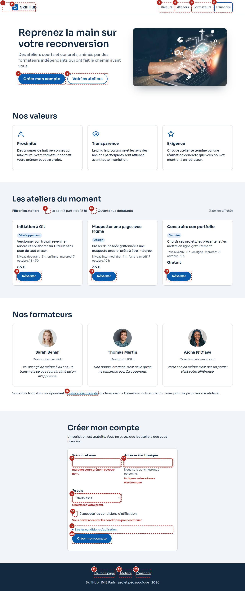

Initiation à Git
Développement
Versionner son travail, revenir en arrière et collaborer sur GitHub.
Niveau débutant · 3 h · en ligne · mercredi 7 octobre, 18 h 30
25 €
Le contrat entre la maquette et l'intégration (FM02, TP 3). Tout ce qui s'affiche ici vient de la vraie feuille de style de la page, src/css/skillhub.css : un jeton changé là change ici. Les ratios de contraste sont mesurés par la formule WCAG (tableau complet).
--texte #12293F
Sur --fond : 14,84:1 · AAA
--texte-doux #44566B
Sur --fond : 7,52:1 · AAA · bordure des champs
--accent #0B5CAD
Sur --fond : 6,66:1 · texte blanc dessus : 6,66:1 · focus
--accent-fonce #084784
Texte blanc dessus : 9,35:1 · survol
--accent-clair #E3EEFA
--accent-fonce dessus : 7,96:1 · étiquettes
--erreur #B3261E
Sur --fond : 6,53:1 · toujours avec un message écrit
--succes #1D6B3A
Sur --succes-fond : 5,74:1
--fond-teinte #F1F4F8
Sections alternées · --texte dessus : 13,45:1
Rapport 1,25 à partir de 1 rem, deux graisses (400 et 600), interligne 1,5 pour le texte et 1,2 pour les titres. Espacements en multiples de 4 px, sans exception.
3,052 rem
2,441 rem
1,953 rem
1,563 rem
1,25 rem
1 rem
0,875 rem
--t-xs à --t-3xl · les deux plus grands ne servent qu'aux titres de section et d'accroche
--e-1 4 px--e-2 8 px--e-3 12 px--e-4 16 px--e-6 24 px--e-8 32 px--e-12 48 px--e-16 64 pxDeux rayons : --rayon-s 8 px (champs, liens), --rayon-m 12 px (cartes, modale). La pilule est une forme, réservée aux boutons et aux étiquettes.
Deux ombres : --ombre-1 (panneau du menu), --ombre-2 (image d'accroche, modale).
Cible minimale : --cible 44 px pour les boutons et les champs ; 24 px pour les cases à cocher (WCAG 2.5.8).
Repos
Survol : --accent-fonce, soulevé d'1 px
Focus : anneau 3 px posé sur le fond (6,04:1 au moins)
Actif : enfoncé d'1 px pendant l'appui
Désactivé = chargement : le libellé dit pourquoi
Variante secondaire, même six états
Repos : bordure --texte-doux (7,52:1)
Focus
Erreur : bordure 2 px ET message écrit, la saisie est conservée
Développement
Versionner son travail, revenir en arrière et collaborer sur GitHub.
Niveau débutant · 3 h · en ligne · mercredi 7 octobre, 18 h 30
25 €
Cas limite : titre de trois lignes
Le bouton reste aligné sur ceux des autres cartes (margin-top: auto).
Niveau intermédiaire · 6 h · Paris
60 €
Aucun atelier ne correspond à ces filtres. Décochez-en un pour élargir la recherche.
Cas limite : catalogue vide, quand les filtres n'ont aucun résultat. Le nombre d'ateliers est aussi annoncé au lecteur d'écran (role="status").
Affichée ici à plat pour la montrer. Dans la page, c'est un <dialog> ouvert par showModal() : focus piégé dedans, Échap ferme, le focus revient au bouton « Réserver ».
Réserver : Initiation à Git
Niveau débutant · 3 h · en ligne · mercredi 7 octobre, 18 h 30 · 25 €
Réserver : Initiation à Git
C'est réservé, Jonny ! Initiation à Git : mercredi 7 octobre, 18 h 30 · 25 €. Le lien de l'atelier arrivera à jonny@exemple.fr la veille.
La vraie page, chargée à 360, 768 et 1280 px de large puis réduite pour tenir ici. Points de rupture à 48em (la navigation tient sur une ligne) et 64em (l'accroche prend plus de place).
Relevé sur la vraie page, touche Tab après touche Tab : 23 arrêts sur ordinateur, 20 sur téléphone (le bouton « Menu » y remplace les quatre liens). Il suit l'ordre du document, donc l'ordre de lecture. Le n° 1, le lien d'évitement, n'apparaît qu'au focus : son cadre est vide au repos.
| Arrêts | Zone | Éléments |
|---|---|---|
| 1 | Avant tout | Lien « Aller au contenu » |
| 2 – 6 | En-tête | Logo, Valeurs, Ateliers, Formateurs, S'inscrire (sur téléphone : logo, puis « Menu ») |
| 7 – 8 | Accroche | Créer mon compte, Voir les ateliers |
| 9 – 13 | Ateliers | Filtres « Le soir », « Ouverts aux débutants », puis les trois boutons « Réserver » |
| 14 | Formateurs | Lien « Créez votre compte » (profil formateur présélectionné) |
| 15 – 20 | Inscription | Nom, courriel, profil, case des conditions, « Lire les conditions », Créer mon compte |
| 21 – 23 | Pied de page | Haut de page, Ateliers, S'inscrire |
